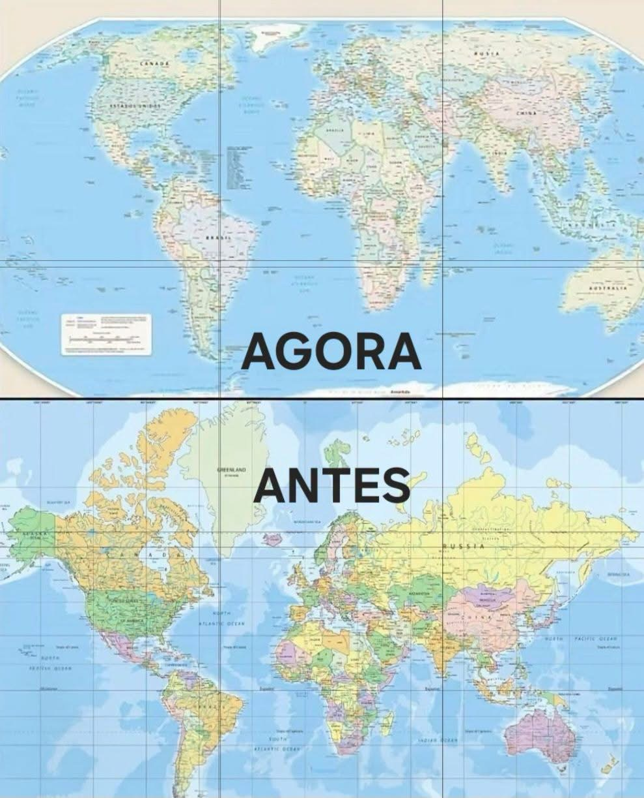
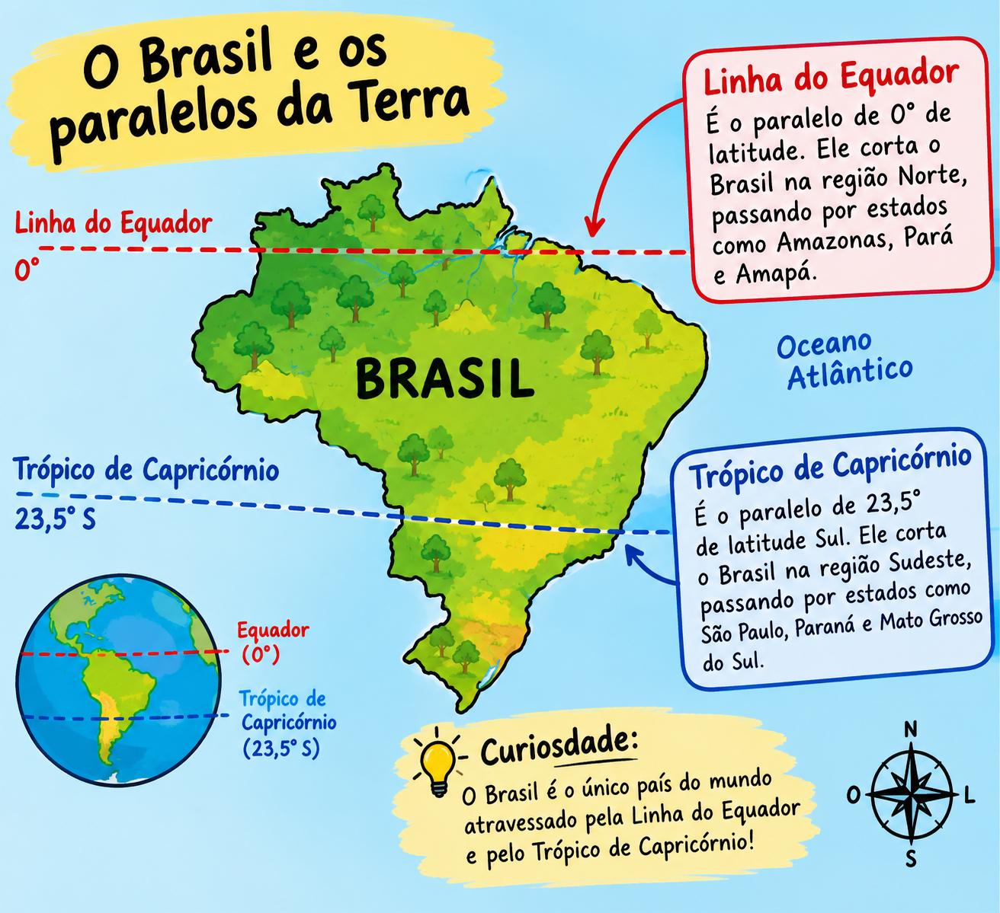

Meu Primeiro Post
Por Juliana Siqueira
Boas-vindas ao meu novo blog! Aqui vou compartilhar curiosidades de Geografia, mapas, atividades e dicas para aprender de forma divertida.
Vou compartilhar conteúdos de Geografia.
Por Juliana Siqueira
Boas-vindas ao meu novo blog! Aqui vou compartilhar curiosidades de Geografia, mapas, atividades e dicas para aprender de forma divertida.

Por Juliana Siqueira
Nova projeção Equal Earth ajusta a representação da área do país, tornando-a mais próxima da realidade geográfica.

Por Juliana Siqueira
Uma curiosidade correta e interessante: o Brasil é o único país do mundo atravessado pela Linha do Equador e pelo Trópico de Capricórnio, dois importantes paralelos da Terra.

Por Juliana Siqueira
O Monte Everest, localizado na cordilheira do Himalaia, é o ponto mais alto da Terra, com cerca de 8.849 metros de altitude.
Fonte: Chat GPT